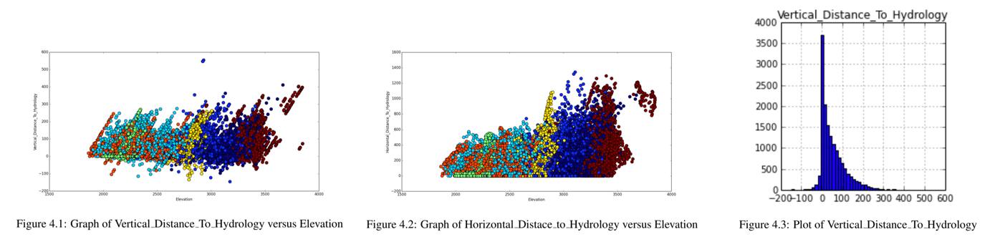
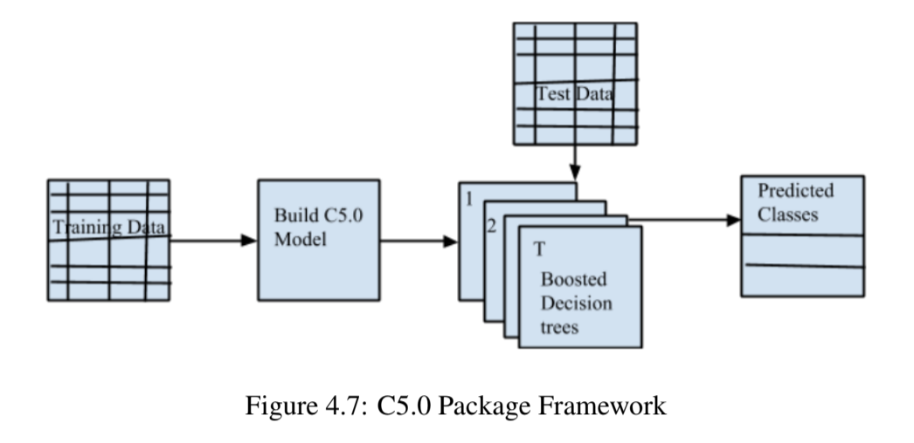
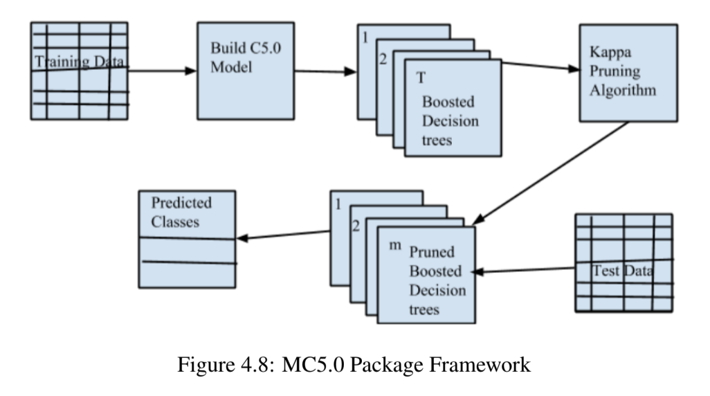

Forest Cover Type Prediction
August 2014 - May 2015
This was my undergraduate thesis project where I worked in the field of Machine Learning with Data Visualization. The aim of the project was to determine the forest cover type of the dataset containing strictly cartographic variables. This was one of the problems available at Kaggle website and we acquired the dataset from UCI machine learning repository.
Feature Engineering
After analyzing the data set and transforming it into more understandable format by removing out-of-range values, missing values etc., we applied feature engineering to understand the relationship between the features and create new features from existing ones if required. Our dataset contained 44 binary columns for 40 soil types and 4 wilderness areas. We changed this representation to a Soil_Type attribute which included all 40 soil type values and Wilderness_Area attribute which included all 4 distinct cover types. The aspect value in the raw dataset was azimuthal (360 degrees) which we shifted to 180 degrees. Correlation between features were also plotted and converted to a single, simpler relation. For instance, the graph below shows the graph of Elevation versus Vertical_Distance_To_Hydrology. The graph coloring each cover type in different colors, seem to reveal a pattern of the plotted points from which a new simpler relation was created by subtracting Vertical_Distance_To_Hydrology from Elevation. Looking at the distribution of Vertical_Distance_To_Hydrology, we found that it has some negative values. We created another variable called 'Highwater' , which indicates whether this attribute has postive or negative value.

Feature Selection
Feature selection aims to choose a small subset of the relevant features from the original ones according to a certain relevance evaluation criterion which leads to better performance, lower computational cost and better model interpretability. Gain Ratio is a measure of information that is provided by an attribute. Decision tree uses Gain Ratio as attribute selection measure for tree construction. Hence, the most relevant attributes are taken for tree construction. This eliminates the need for using any other feature selection technique. Also upon plotting graphs, we observed that the attributes are independent of each other. For example, from right-hand side graphs, the pair of attributes Aspect, Slope and Horizontal_Distance_To_Fire_Points are found to be independent of each other and hence are included in the dataset

Pruning Boosted Classifier(MC5.0)
The C50 package in R builds C5.0 decision trees and rule based models for classification. The model can take the form of a full decision tree or a collection of rules or boosted versions of either. The framework of C50 package with boosting section is given below.

In the model building stage, C50 takes a parameter trials (T) to specify the number of boosting iterations. A value of one indicates that a single model is used. Hence T number of boosted decision trees make up the ensemble used for predicting classes.
The Kappa Pruning Algorithm was implemented to improve the boosting performance as follows: Kappa K on the training set, for every pair of classifiers is produced by adaboost. Once all kappas are calculated, choose pairs of classifiers starting with the pair that has the lowest K and consider them in increasing order of K until M classifiers are obtained.
The source code of the C50 package in R was modified to prune the boosted classifiers. Kappa Pruning algorithm was applied on T boosted classifiers to obtain M pruned boosted classifiers (M<=T). The modified framework of the C50 model is as shown below.

Our work was published at 2015 IEEE International Advance Computing Conference (IACC). Read more
here.